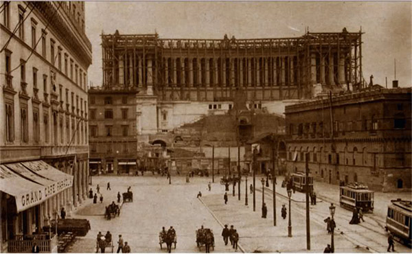

The Vittoriano
If you’ve been to Rome, you’ve seen it, the gargantuan white monument stomped down on the side of the Capitoline Hill. The blinding Brescian marble, the insistent bronze sculptures, that pompous colonnade and gaping stairway is an outright insult to its more elegant and subtle surroundings. Yet, who can deny its obvious grandeur, rising above Rome, above everything.
The Vittoriano’s ostentation is only eclipsed by its history, for the monument to Vittorio Emanuele II was built as a representation of the new Italian nationalism, unity and power. Before Rome was a capital city it was a Papal State; then 150 years ago, Italy was unified: the Risorgimento. This new Italy demanded a new vision, a blatant statement for all people to see. The government held a contest and the winning architect would construct that representation in the country’s new capital. Giuseppe Sacconi won; he began building the Vittoriano in 1895 and it was finished in 1911, some years after he had died.

Originally the thing was intended for via Nazionale; the location was later switched to Piazza Venezia, Rome’s center. The Vittoriano was built into the side of the Capitoline, besides Michalangelo’s Campidoglio, behind it stretches the Forum; in this way, the present and the future of Italy was connected to Rome’s illustrious past. The sheer size and mass of the monument rivals the basilica of San Pietro, a challenge to the ousted papacy. In 1921 the tomb of the unknown soldier was added to the Vittoriano, Nationalism’s ultimate tear-jerker.
Creating a new Italian identity, and linking it with the Imperialism of ancient Rome, began before Mussolini became Prime Minister. He merely took advantage of a voluble situation: the stumbling of a new government, the monarchy and the continued search for a concise identity. In 1929 Mussolini appropriated the Palazzo Venezia as his office and the Vittoriano as his stage; speeches, parades and propaganda inundated the area.
The Vittoriano’s symbolism is obvious: gold goddess Roma, victorious king Vittorio Emanuele II, sixteen classical figures to represent the sixteen regions of Italy now united. Less obvious when standing before that hulking mass of marble is what buildings and streets were destroyed to make room for it. To piece together this area that has so cleanly been wiped away is like walking through a ghost town of my imagination. In a way, this lost area still remains as it used to be, in memory, untouched by nationalism, fascism, modernity.
If one was to start on the Capitoline, behind the Ara Coeli was a convent and somewhere up there, the Tower of Paul III. The part of the hill these buildings sat on must have been sheered away for there is no extra space for a foundation anywhere. Down below were the streets of San Marco and Giulio Romano, named after the painter who had his house there. Michalangelo’s house was also destroyed, as was via Macel de’Corvi and the Piazza of the same name. The sole element of this area left standing (on the Fori Imperiali side) is the tomb of Caio Publicio Bibulo, which had been incorporated into a building on the Piazza Macel de’Corvi.
It’s as difficult to find something good to say about the Vittoriano as it is difficult to find someone to say it. Seeing that eyesore as often as I have lately, makes me think of great penmarks scratched into a beautiful painting. But it’s there and there to stay, unfortunately.
· · · · · · · · · · · · · · · · · · · ·